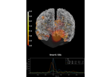

mne.MixedSourceEstimate#
- class mne.MixedSourceEstimate(data, vertices=None, tmin=None, tstep=None, subject=None, verbose=None)[source]#
Container for mixed surface and volume source estimates.
- Parameters:
- data
arrayof shape (n_dipoles, n_times) |tuple, shape (2,) The data in source space. The data can either be a single array or a tuple with two arrays: kernel shape (n_vertices, n_sensors) and sens_data shape (n_sensors, n_times). In this case, the source space data corresponds to
np.dot(kernel, sens_data).- vertices
listofarray Vertex numbers corresponding to the data. The list contains arrays with one array per source space.
- tminscalar
Time point of the first sample in data.
- tstepscalar
Time step between successive samples in data.
- subject
str The FreeSurfer subject name. While not necessary, it is safer to set the subject parameter to avoid analysis errors.
- verbose
bool|str|int|None Control verbosity of the logging output. If
None, use the default verbosity level. See the logging documentation andmne.verbose()for details. Should only be passed as a keyword argument.
- data
See also
SourceEstimateA container for surface source estimates.
VectorSourceEstimateA container for vector surface source estimates.
VolSourceEstimateA container for volume source estimates.
VolVectorSourceEstimateA container for Volume vector source estimates.
Notes
New in version 0.9.0.
- Attributes:
- subject
str|None The subject name.
timesarrayof shape (n_times,)A timestamp for each sample.
- vertices
listofarray Vertex numbers corresponding to the data. The list contains arrays with one array per source space.
dataarrayof shape (n_dipoles, n_times)Numpy array of source estimate data.
shapetupleShape of the data.
- subject
Methods
__add__(a)Add source estimates.
__div__(a)Divide source estimates.
__mul__(a)Multiply source estimates.
__neg__()Negate the source estimate.
__sub__(a)Subtract source estimates.
apply_baseline([baseline,verbose])Baseline correct source estimate data.
bin(width[,tstart,tstop,func])Return a source estimate object with data summarized over time bins.
copy()Return copy of source estimate instance.
crop([tmin,tmax,include_tmax])Restrict SourceEstimate to a time interval.
decimate(decim[,offset,verbose])Decimate the time-series data.
extract_label_time_course(labels,src[,...])Extract label time courses for lists of labels.
get_peak([tmin,tmax,mode,vert_as_index,...])Get location and latency of peak amplitude.
mean()Make a summary stc file with mean over time points.
plot([subject,surface,hemi,colormap,...])Plot SourceEstimate.
resample(sfreq[,npad,window,n_jobs,verbose])Resample data.
save(fname[,ftype,overwrite,verbose])Save the full source estimate to an HDF5 file.
shift_time(tshift[,relative])Shift time scale in epoched or evoked data.
sqrt()Take the square root.
sum()Make a summary stc file with sum over time points.
surface()Return the cortical surface source estimate.
time_as_index(times[,use_rounding])Convert time to indices.
to_data_frame([index,scalings,...])Export data in tabular structure as a pandas DataFrame.
transform(func[,idx,tmin,tmax,copy])Apply linear transform.
transform_data(func[,idx,tmin_idx,tmax_idx])Get data after a linear (time) transform has been applied.
volume()Return the volume surface source estimate.
- apply_baseline(baseline=(None, 0), *, verbose=None)[source]#
Baseline correct source estimate data.
- Parameters:
- baseline
None|tupleof length 2 The time interval to consider as baseline when applying baseline correction. If
None, do not apply baseline correction. If a tuple(a, b), the interval is betweenaandb(in seconds), including the endpoints. IfaisNone, the beginning of the data is used; and ifbisNone, it is set to the end of the interval. If(None, None), the entire time interval is used.Note
The baseline
(a, b)includes both endpoints, i.e. all timepointstsuch thata <= t <= b.Correction is applied to each source individually in the following way:
Calculate the mean signal of the baseline period.
Subtract this mean from the entire source estimate data.
Note
Baseline correction is appropriate when signal and noise are approximately additive, and the noise level can be estimated from the baseline interval. This can be the case for non-normalized source activities (e.g. signed and unsigned MNE), but it is not the case for normalized estimates (e.g. signal-to-noise ratios, dSPM, sLORETA).
Defaults to
(None, 0), i.e. beginning of the the data until time point zero.- verbose
bool|str|int|None Control verbosity of the logging output. If
None, use the default verbosity level. See the logging documentation andmne.verbose()for details. Should only be passed as a keyword argument.
- baseline
- Returns:
- stcinstance of
SourceEstimate The baseline-corrected source estimate object.
- stcinstance of
Notes
Baseline correction can be done multiple times.
- bin(width, tstart=None, tstop=None, func=<function mean>)[source]#
Return a source estimate object with data summarized over time bins.
Time bins of
widthseconds. This method is intended for visualization only. No filter is applied to the data before binning, making the method inappropriate as a tool for downsampling data.- Parameters:
- widthscalar
Width of the individual bins in seconds.
- tstartscalar |
None Time point where the first bin starts. The default is the first time point of the stc.
- tstopscalar |
None Last possible time point contained in a bin (if the last bin would be shorter than width it is dropped). The default is the last time point of the stc.
- func
callable() Function that is applied to summarize the data. Needs to accept a numpy.array as first input and an
axiskeyword argument.
- Returns:
- stc
SourceEstimate|VectorSourceEstimate The binned source estimate.
- stc
- copy()[source]#
Return copy of source estimate instance.
- Returns:
- stcinstance of
SourceEstimate A copy of the source estimate.
- stcinstance of
- crop(tmin=None, tmax=None, include_tmax=True)[source]#
Restrict SourceEstimate to a time interval.
- Parameters:
- tmin
float|None The first time point in seconds. If None the first present is used.
- tmax
float|None The last time point in seconds. If None the last present is used.
- include_tmax
bool If True (default), include tmax. If False, exclude tmax (similar to how Python indexing typically works).
New in version 0.19.
- tmin
- Returns:
- stcinstance of
SourceEstimate The cropped source estimate.
- stcinstance of
- property data#
Numpy array of source estimate data.
- decimate(decim, offset=0, verbose=None)[source]#
Decimate the time-series data.
- Parameters:
- decim
int Factor by which to subsample the data.
Warning
Low-pass filtering is not performed, this simply selects every Nth sample (where N is the value passed to
decim), i.e., it compresses the signal (see Notes). If the data are not properly filtered, aliasing artifacts may occur.- offset
int Apply an offset to where the decimation starts relative to the sample corresponding to t=0. The offset is in samples at the current sampling rate.
New in version 0.12.
- verbose
bool|str|int|None Control verbosity of the logging output. If
None, use the default verbosity level. See the logging documentation andmne.verbose()for details. Should only be passed as a keyword argument.
- decim
- Returns:
- instMNE-object
The decimated object.
See also
Notes
For historical reasons,
decim/ decimation refers to simply subselecting samples from a given signal. This contrasts with the broader signal processing literature, where decimation is defined as (quoting [1], p. 172; which cites [2]):a general system for downsampling by a factor of M is the one shown in Figure 4.23. Such a system is called a decimator, and downsampling by lowpass filtering followed by compression [i.e, subselecting samples] has been termed decimation (Crochiere and Rabiner, 1983).
Hence decimation in MNE is what is considered compression in the signal processing community.
Decimation can be done multiple times. For example,
inst.decimate(2).decimate(2)will be the same asinst.decimate(4).If
decimis 1, this method does not copy the underlying data.New in version 0.10.0.
References
- extract_label_time_course(labels, src, mode='auto', allow_empty=False, verbose=None)[source]#
Extract label time courses for lists of labels.
This function will extract one time course for each label. The way the time courses are extracted depends on the mode parameter.
- Parameters:
- labels
Label|BiHemiLabel|list|tuple|str If using a surface or mixed source space, this should be the
Labels for which to extract the time course. If working with whole-brain volume source estimates, this must be one of:a string path to a FreeSurfer atlas for the subject (e.g., their aparc.a2009s+aseg.mgz) to extract time courses for all volumes in the atlas
a two-element list or tuple, the first element being a path to an atlas, and the second being a list or dict of
volume_labelsto extract (seemne.setup_volume_source_space()for details).
Changed in version 0.21.0: Support for volume source estimates.
- srcinstance of
SourceSpaces The source spaces for the source time courses.
- mode
str Extraction mode, see Notes.
- allow_empty
bool|str False(default) will emit an error if there are labels that have no vertices in the source estimate.Trueand'ignore'will return all-zero time courses for labels that do not have any vertices in the source estimate, and True will emit a warning while and ignore will just log a message.Changed in version 0.21.0: Support for ignore.
- verbose
bool|str|int|None Control verbosity of the logging output. If
None, use the default verbosity level. See the logging documentation andmne.verbose()for details. Should only be passed as a keyword argument.
- labels
- Returns:
See also
extract_label_time_courseExtract time courses for multiple STCs.
Notes
Valid values for
modeare:'max'Maximum value across vertices at each time point within each label.
'mean'Average across vertices at each time point within each label. Ignores orientation of sources for standard source estimates, which varies across the cortical surface, which can lead to cancellation. Vector source estimates are always in XYZ / RAS orientation, and are thus already geometrically aligned.
'mean_flip'Finds the dominant direction of source space normal vector orientations within each label, applies a sign-flip to time series at vertices whose orientation is more than 180 different from the dominant direction, and then averages across vertices at each time point within each label.
'pca_flip'Applies singular value decomposition to the time courses within each label, and uses the first right-singular vector as the representative label time course. This signal is scaled so that its power matches the average (per-vertex) power within the label, and sign-flipped by multiplying by
np.sign(u @ flip), whereuis the first left-singular vector andflipis the same sign-flip vector used whenmode='mean_flip'. This sign-flip ensures that extracting time courses from the same label in similar STCs does not result in 180 direction/phase changes.
'auto'(default)Uses
'mean_flip'when a standard source estimate is applied, and'mean'when a vector source estimate is supplied.New in version 0.21: Support for
'auto', vector, and volume source estimates.
The only modes that work for vector and volume source estimates are
'mean','max', and'auto'.
- get_peak(tmin=None, tmax=None, mode='abs', vert_as_index=False, time_as_index=False)[source]#
Get location and latency of peak amplitude.
- Parameters:
- tmin
float|None The minimum point in time to be considered for peak getting.
- tmax
float|None The maximum point in time to be considered for peak getting.
- mode{pos, neg, abs}
How to deal with the sign of the data. If pos only positive values will be considered. If neg only negative values will be considered. If abs absolute values will be considered. Defaults to abs.
- vert_as_index
bool Whether to return the vertex index (True) instead of of its ID (False, default).
- time_as_index
bool Whether to return the time index (True) instead of the latency (False, default).
- tmin
- Returns:
- mean()[source]#
Make a summary stc file with mean over time points.
- Returns:
- stc
SourceEstimate|VectorSourceEstimate The modified stc.
- stc
- plot(subject=None, surface='inflated', hemi='lh', colormap='auto', time_label='auto', smoothing_steps=10, transparent=True, alpha=1.0, time_viewer='auto', subjects_dir=None, figure=None, views='auto', colorbar=True, clim='auto', cortex='classic', size=800, background='black', foreground=None, initial_time=None, time_unit='s', backend='auto', spacing='oct6', title=None, show_traces='auto', src=None, volume_options=1.0, view_layout='vertical', add_data_kwargs=None, brain_kwargs=None, verbose=None)[source]#
Plot SourceEstimate.
- Parameters:
- subject
str|None The FreeSurfer subject name. If
None,stc.subjectwill be used.- surface
str The type of surface (inflated, white etc.).
- hemi
str Hemisphere id (ie
'lh','rh','both', or'split'). In the case of'both', both hemispheres are shown in the same window. In the case of'split'hemispheres are displayed side-by-side in different viewing panes.- colormap
str|np.ndarrayoffloat, shape(n_colors, 3 | 4) Name of colormap to use or a custom look up table. If array, must be (n x 3) or (n x 4) array for with RGB or RGBA values between 0 and 255. The default (auto) uses
'hot'for one-sided data and mne for two-sided data.- time_label
str|callable()|None Format of the time label (a format string, a function that maps floating point time values to strings, or None for no label). The default is
'auto', which will usetime=%0.2f msif there is more than one time point.- smoothing_steps
int The amount of smoothing.
- transparent
bool|None If True: use a linear transparency between fmin and fmid and make values below fmin fully transparent (symmetrically for divergent colormaps). None will choose automatically based on colormap type.
- alpha
float Alpha value to apply globally to the overlay. Has no effect with mpl backend.
- time_viewer
bool|str Display time viewer GUI. Can also be auto, which will mean True for the PyVista backend and False otherwise.
Changed in version 0.20.0: auto mode added.
- subjects_dirpath-like |
None The path to the directory containing the FreeSurfer subjects reconstructions. If
None, defaults to theSUBJECTS_DIRenvironment variable.- figureinstance of
Figure3D| instance ofmatplotlib.figure.Figure|list|int|None If None, a new figure will be created. If multiple views or a split view is requested, this must be a list of the appropriate length. If int is provided it will be used to identify the PyVista figure by its id or create a new figure with the given id. If an instance of matplotlib figure, mpl backend is used for plotting.
- views
str|list View to use. Using multiple views (list) is not supported for mpl backend. See
Brain.show_viewfor valid string options.When plotting a standard SourceEstimate (not volume, mixed, or vector) and using the PyVista backend,
views='flat'is also supported to plot cortex as a flatmap.Using multiple views (list) is not supported by the matplotlib backend.
Changed in version 0.21.0: Support for flatmaps.
- colorbar
bool If True, display colorbar on scene.
- clim
str|dict Colorbar properties specification. If auto, set clim automatically based on data percentiles. If dict, should contain:
kindvalue | percentFlag to specify type of limits.
limslist | np.ndarray | tuple of float, 3 elementsLower, middle, and upper bounds for colormap.
pos_limslist | np.ndarray | tuple of float, 3 elementsLower, middle, and upper bound for colormap. Positive values will be mirrored directly across zero during colormap construction to obtain negative control points.
Note
Only one of
limsorpos_limsshould be provided. Only sequential colormaps should be used withlims, and only divergent colormaps should be used withpos_lims.- cortex
str|tuple Specifies how binarized curvature values are rendered. Either the name of a preset Brain cortex colorscheme (one of
'classic','bone','low_contrast', or'high_contrast'), or the name of a colormap, or a tuple with values(colormap, min, max, reverse)to fully specify the curvature colors. Has no effect with the matplotlib backend.- size
floatortupleoffloat The size of the window, in pixels. can be one number to specify a square window, or the (width, height) of a rectangular window. Has no effect with mpl backend.
- backgroundmatplotlib color
Color of the background of the display window.
- foregroundmatplotlib color |
None Color of the foreground of the display window. Has no effect with mpl backend. None will choose white or black based on the background color.
- initial_time
float|None The time to display on the plot initially.
Noneto display the first time sample (default).- time_unit
's'|'ms' Whether time is represented in seconds (s, default) or milliseconds (ms).
- backend
'auto'|'pyvistaqt'|'matplotlib' Which backend to use. If
'auto'(default), tries to plot with pyvistaqt, but resorts to matplotlib if no 3d backend is available.New in version 0.15.0.
- spacing
str Only affects the matplotlib backend. The spacing to use for the source space. Can be
'ico#'for a recursively subdivided icosahedron,'oct#'for a recursively subdivided octahedron, or'all'for all points. In general, you can speed up the plotting by selecting a sparser source space. Defaults to oct6.New in version 0.15.0.
- title
str|None Title for the figure. If None, the subject name will be used.
New in version 0.17.0.
- show_traces
bool|str|float If True, enable interactive picking of a point on the surface of the brain and plot its time course. This feature is only available with the PyVista 3d backend, and requires
time_viewer=True. Defaults to auto, which will use True if and only iftime_viewer=True, the backend is PyVista, and there is more than one time point. If float (between zero and one), it specifies what proportion of the total window should be devoted to traces (True is equivalent to 0.25, i.e., it will occupy the bottom 1/4 of the figure).New in version 0.20.0.
- srcinstance of
SourceSpaces|None The source space corresponding to the source estimate. Only necessary if the STC is a volume or mixed source estimate.
- volume_options
float|dict|None Options for volumetric source estimate plotting, with key/value pairs:
'resolution'float | NoneResolution (in mm) of volume rendering. Smaller (e.g., 1.) looks better at the cost of speed. None (default) uses the volume source space resolution, which is often something like 7 or 5 mm, without resampling.
'blending'strCan be mip (default) for maximum intensity projection or composite for composite blending using alpha values.
'alpha'float | NoneAlpha for the volumetric rendering. Defaults are 0.4 for vector source estimates and 1.0 for scalar source estimates.
'surface_alpha'float | NoneAlpha for the surface enclosing the volume(s). None (default) will use half the volume alpha. Set to zero to avoid plotting the surface.
'silhouette_alpha'float | NoneAlpha for a silhouette along the outside of the volume. None (default) will use
0.25 * surface_alpha.
'silhouette_linewidth'floatThe line width to use for the silhouette. Default is 2.
A float input (default 1.) or None will be used for the
'resolution'entry.- view_layout
str Can be vertical (default) or horizontal. When using horizontal mode, the PyVista backend must be used and hemi cannot be split.
- add_data_kwargs
dict|None Additional arguments to brain.add_data (e.g.,
dict(time_label_size=10)).- brain_kwargs
dict|None Additional arguments to the
mne.viz.Brainconstructor (e.g.,dict(silhouette=True)).- verbose
bool|str|int|None Control verbosity of the logging output. If
None, use the default verbosity level. See the logging documentation andmne.verbose()for details. Should only be passed as a keyword argument.
- subject
- Returns:
- figureinstance of
mne.viz.Brain|matplotlib.figure.Figure An instance of
mne.viz.Brainor matplotlib figure.
- figureinstance of
Notes
Flatmaps are available by default for
fsaveragebut not for other subjects reconstructed by FreeSurfer. We recommend usingmne.compute_source_morph()to morph source estimates tofsaveragefor flatmap plotting. If you want to construct your own flatmap for a given subject, these links might help:
- resample(sfreq, npad='auto', window='boxcar', n_jobs=None, verbose=None)[source]#
Resample data.
If appropriate, an anti-aliasing filter is applied before resampling. See Resampling and decimating data for more information.
- Parameters:
- sfreq
float New sample rate to use.
- npad
int|str Amount to pad the start and end of the data. Can also be auto to use a padding that will result in a power-of-two size (can be much faster).
- window
str|tuple Window to use in resampling. See
scipy.signal.resample().- n_jobs
int|None The number of jobs to run in parallel. If
-1, it is set to the number of CPU cores. Requires thejoblibpackage.None(default) is a marker for unset that will be interpreted asn_jobs=1(sequential execution) unless the call is performed under ajoblib.parallel_backend()context manager that sets another value forn_jobs.- verbose
bool|str|int|None Control verbosity of the logging output. If
None, use the default verbosity level. See the logging documentation andmne.verbose()for details. Should only be passed as a keyword argument.
- sfreq
- Returns:
- stcinstance of
SourceEstimate The resampled source estimate.
- stcinstance of
Notes
For some data, it may be more accurate to use npad=0 to reduce artifacts. This is dataset dependent check your data!
Note that the sample rate of the original data is inferred from tstep.
- save(fname, ftype='h5', *, overwrite=False, verbose=None)[source]#
Save the full source estimate to an HDF5 file.
- Parameters:
- fnamepath-like
The file name to write the source estimate to, should end in
'-stc.h5'.- ftype
str File format to use. Currently, the only allowed values is
"h5".- overwrite
bool If True (default False), overwrite the destination file if it exists.
New in version 1.0.
- verbose
bool|str|int|None Control verbosity of the logging output. If
None, use the default verbosity level. See the logging documentation andmne.verbose()for details. Should only be passed as a keyword argument.
- property sfreq#
Sample rate of the data.
- property shape#
Shape of the data.
- shift_time(tshift, relative=True)[source]#
Shift time scale in epoched or evoked data.
- Parameters:
- tshift
float The (absolute or relative) time shift in seconds. If
relativeis True, positive tshift increases the time value associated with each sample, while negative tshift decreases it.- relative
bool If True, increase or decrease time values by
tshiftseconds. Otherwise, shift the time values such that the time of the first sample equalstshift.
- tshift
- Returns:
- epochsMNE-object
The modified instance.
Notes
This method allows you to shift the time values associated with each data sample by an arbitrary amount. It does not resample the signal or change the data values in any way.
- sqrt()[source]#
Take the square root.
- Returns:
- stcinstance of
SourceEstimate A copy of the SourceEstimate with sqrt(data).
- stcinstance of
- sum()[source]#
Make a summary stc file with sum over time points.
- Returns:
- stc
SourceEstimate|VectorSourceEstimate The modified stc.
- stc
- surface()[source]#
Return the cortical surface source estimate.
- Returns:
- stcinstance of
SourceEstimateorVectorSourceEstimate The surface source estimate.
- stcinstance of
Examples using
surface:Compute MNE inverse solution on evoked data with a mixed source space
Compute MNE inverse solution on evoked data with a mixed source space
- property times#
A timestamp for each sample.
- property tmax#
Last time point.
- property tmin#
The first timestamp.
- to_data_frame(index=None, scalings=None, long_format=False, time_format=None, *, verbose=None)[source]#
Export data in tabular structure as a pandas DataFrame.
Vertices are converted to columns in the DataFrame. By default, an additional column time is added, unless
index='time'(in which case time values form the DataFrames index).- Parameters:
- indextime |
None Kind of index to use for the DataFrame. If
None, a sequential integer index (pandas.RangeIndex) will be used. If'time', apandas.Float64Index,pandas.Int64Index, orpandas.TimedeltaIndexwill be used (depending on the value oftime_format). Defaults toNone.- scalings
dict|None Scaling factor applied to the channels picked. If
None, defaults todict(eeg=1e6, mag=1e15, grad=1e13)i.e., converts EEG to V, magnetometers to fT, and gradiometers to fT/cm.- long_format
bool If True, the DataFrame is returned in long format where each row is one observation of the signal at a unique combination of time point and vertex. Defaults to
False.- time_format
str|None Desired time format. If
None, no conversion is applied, and time values remain as float values in seconds. If'ms', time values will be rounded to the nearest millisecond and converted to integers. If'timedelta', time values will be converted topandas.Timedeltavalues. Default isNone.New in version 0.20.
- verbose
bool|str|int|None Control verbosity of the logging output. If
None, use the default verbosity level. See the logging documentation andmne.verbose()for details. Should only be passed as a keyword argument.
- indextime |
- Returns:
- dfinstance of
pandas.DataFrame A dataframe suitable for usage with other statistical/plotting/analysis packages.
- dfinstance of
- transform(func, idx=None, tmin=None, tmax=None, copy=False)[source]#
Apply linear transform.
The transform is applied to each source time course independently.
- Parameters:
- func
callable() The transform to be applied, including parameters (see, e.g.,
functools.partial()). The first parameter of the function is the input data. The first two dimensions of the transformed data should be (i) vertices and (ii) time. See Notes for details.- idx
array|None Indices of source time courses for which to compute transform. If None, all time courses are used.
- tmin
float|int|None First time point to include (ms). If None, self.tmin is used.
- tmax
float|int|None Last time point to include (ms). If None, self.tmax is used.
- copy
bool If True, return a new instance of SourceEstimate instead of modifying the input inplace.
- func
- Returns:
- stcs
SourceEstimate|VectorSourceEstimate|list The transformed stc or, in the case of transforms which yield N-dimensional output (where N > 2), a list of stcs. For a list, copy must be True.
- stcs
Notes
Transforms which yield 3D output (e.g. time-frequency transforms) are valid, so long as the first two dimensions are vertices and time. In this case, the copy parameter must be True and a list of SourceEstimates, rather than a single instance of SourceEstimate, will be returned, one for each index of the 3rd dimension of the transformed data. In the case of transforms yielding 2D output (e.g. filtering), the user has the option of modifying the input inplace (copy = False) or returning a new instance of SourceEstimate (copy = True) with the transformed data.
Applying transforms can be significantly faster if the SourceEstimate object was created using (kernel, sens_data), for the data parameter as the transform is applied in sensor space. Inverse methods, e.g., apply_inverse_epochs, or apply_lcmv_epochs do this automatically (if possible).
- transform_data(func, idx=None, tmin_idx=None, tmax_idx=None)[source]#
Get data after a linear (time) transform has been applied.
The transform is applied to each source time course independently.
- Parameters:
- func
callable() The transform to be applied, including parameters (see, e.g.,
functools.partial()). The first parameter of the function is the input data. The first return value is the transformed data, remaining outputs are ignored. The first dimension of the transformed data has to be the same as the first dimension of the input data.- idx
array|None Indicices of source time courses for which to compute transform. If None, all time courses are used.
- tmin_idx
int|None Index of first time point to include. If None, the index of the first time point is used.
- tmax_idx
int|None Index of the first time point not to include. If None, time points up to (and including) the last time point are included.
- func
- Returns:
- data_t
ndarray The transformed data.
- data_t
Notes
Applying transforms can be significantly faster if the SourceEstimate object was created using (kernel, sens_data), for the data parameter as the transform is applied in sensor space. Inverse methods, e.g., apply_inverse_epochs, or apply_lcmv_epochs do this automatically (if possible).
- property tstep#
The change in time between two consecutive samples (1 / sfreq).
- volume()[source]#
Return the volume surface source estimate.
- Returns:
- stcinstance of
VolSourceEstimateorVolVectorSourceEstimate The volume source estimate.
- stcinstance of
Examples using
volume:Compute MNE inverse solution on evoked data with a mixed source space
Compute MNE inverse solution on evoked data with a mixed source space
Examples using mne.MixedSourceEstimate#

Compute MNE inverse solution on evoked data with a mixed source space